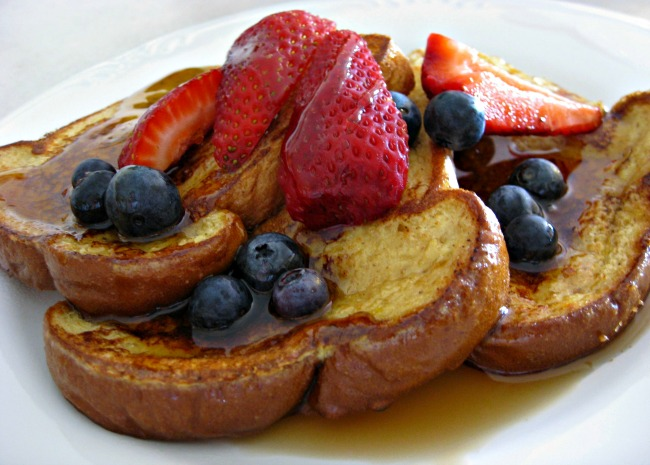

Simple Yet Amazing French Toast
Recommended to be served hot with butter or margarine and maple syrup.
Ingredients
- 6 thick slices bread
- 2 eggs
- ⅔ cup milk
- ¼ teaspoon ground cinnamon (Optional)
- ¼ teaspoon ground nutmeg (Optional)
- 1 teaspoon vanilla extract (Optional)
- salt to taste
Steps
- Beat together egg, milk, salt, desired spices and vanilla.
- Heat a lightly oiled griddle or skillet over medium-high heat.
- Dunk each slice of bread in egg mixture, soaking both sides. Place in pan, and cook on both sides until golden. Serve hot. Bon Appétit!
Return to Home Page
Return To Top